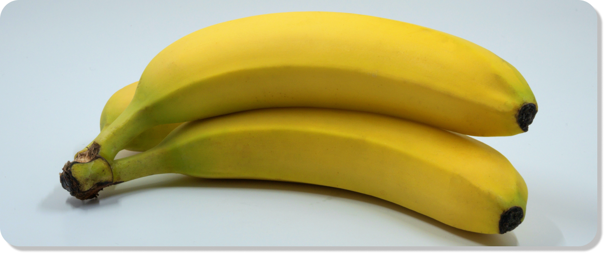

Pengendalian hama dan penyakit tanaman pisang
 12 Oktober 2023
 Admin Admin
Admin AdminPisang merupakan salah satu buah yang digemari secara global. Namun tidak semua negara bisa menanam pisang. Tanaman ini hanya bisa tumbuh di daerah tropis. Indonesia merupakan salah satu penghasil pisang dunia. Potensi pengembangannya cukup besar, negeri ini memiliki aneka ragam jenis pisang. Lebih dari 10 jenis diantaraya dikategorikan sebagai varietas pisang unggul.
Salah satu kendala dalam budidaya pisang adalah serangan penyakit. Hama dan penyakit tanaman pisang relatif tidak terlalu banyak, namun beberapa penyakit bisa menimbulkan kerugian serius. Serangan yang paling umum diantaranya layu fusarium, layu bakteri dan kerdil.
Layu fusarium
Penyakit ini disebabkan oleh cendawan Fusarium oxysporum. Penyakit layu fusarium banyak menyerang tanaman hortikultura. Beberapa tanaman yang sering terjangkit penyakit ini antara lain cabe, bawang dan tomat. Serangan penyakit ini cukup mematikan karena bisa menyebar dalam tempo yang singkat dengan skala luas. Begitu juga pada tanaman pisang, layu fusariun bisa menyerang daun, batang hingga akar. Penularan penyakit ini bisa dengan berbagai media seperti bibit, tanah, air, pupuk kandang atau alat-alat pertanian.
Gejala awal serangan layu fusarium pada tanaman pisang berupa menguningnya daun yang diikuti kelayuan pada pelepah. Daun dan pelepah mengalami perubahan warna atau diskolorisasi. Selain daun terjadi juga perubahan warna pada bonggol.
Tanaman pisang yang terserang penyakit ini biasanya akan mengalami kematian. Upaya yang bisa dilakukan untuk mencegah penularan lebih lanjut antara lain dengan membongkar dan membakar tanaman yang sakit. Kemudian tanah bekas tanaman tersebut disiram dengan fungisida.
Adapun kiat-kiat pencegahan penyakit tanaman pisang ini antara lain:
Layu bakteri
Penyakit tanaman pisang yang menyebabkan kelayuan bukan hanya diakibatkan oleh cendawan. Bakteri Pseudomonas solaracearum juga bisa menyebabkan layu pada tanaman pisang. Penyakit ini biasanya menampakkan diri setelah tandan pisang keluar.
Pada awalnya daun muda mengalami perubahan warna. Terlihat garis coklat kekuningan ke arah tepi daun, kemudian daun kemudian menguning, coklat hingga akhirnya layu. Ciri yang lebih khusus adanya lendir berbau yang keluar dari buah, tangkai tandan, bonggol dan batang. Lendir tersebut berwarna putih, abu-abu, hingga coklat kemerahan.
Bila tanaman terserang penyakit ini sebaiknya musnahkan dengan larutan herbisida mengandung glyphospate 5% sebanyak 5-20 ml. Kemudian fumigasi tanah bekas tanaman yang sakit dengan Methyl Bromide.
Kiat untuk mencegah serangan penyakit tanaman pisang ini antara lain:
Bercak daun
Bercak daun merupakan penyakit tanaman pisang yang disebabkan oleh cendawan Mycosphaerella musicola Mulder. Serangan cendawan ini tidak seganas layu fusarium namun tetap bisa menyebabkan kerugian besar karena buah pisang akan mengalami kematangan sebelum waktunya. Gejala awalnya terlihat bintik-bintik hitam pada daun. Kemudian bintik-bintik tersebut semakin membesar dan melebar membentuk noda kuning kecoklatan hingga hitam. Pada akhirnya semua daun menjadi kuning dan kering. Pengendalian penyakit tanaman pisang ini dilakukan dengan cara memapas daun-daun yang terserang dan membakarnya. Untuk mencegah serangan penyakit ini dianjurkan melakukan pemupukan berimbang.
Penyakit kerdil pisang
Kerdil pisang merupakan salah satu penyakit tanaman pisang yang cukup sulit diberantas. Penyakit ini disebabkan oleh virus Banana bunchy top virus (BBTV) dan Abaca bunchy top virus (ABTV). Kedua virus tersebut ditularkan oleh kutu daun Pentalonia nigronervosa. Tanaman yang terserang penyakit ini akan mengalami pertumbuhan yang lambat. Daun tumbuh agak tegak, pendek dan sempit. Kemudian daun menguning dimulai dari tepiannya. Selain itu daun menjadi rapuh dan mudah patah.
Virus ini menular dari pohon ke pohon dengan bantuan kutu daun. Jadi, bila populasi kutu daun dikebun pisang meningkat maka penularan penyakit ini akan semakin meluas.
Cara pengendalian penyakit tanaman pisang ini antara lain:
Referensi
TINGGALKAN KOMENTAR